¶
🗓 Week 14 - 20/ 01 February - 17 March 2023
prototyping for design
with Edu, Victor, Santi, Josep, Aida and Petra
(somehow) unexpectadly this course turned out to be a series of intense lectures with subsequent (self-)explorative adapation trials. theoretically we are introduced to the huge fields of advanced manufacturing, rapid prototyping and other new design methodologies by victor and edu that really did their best to hold us up motivated. we are very much encouraged to play around with the various tools accessible to us and make up some (hands-on? - the computer) experiences with digital fabrication tools. when we come to the micro-challenge-week we actually explorer what it means to physicalize digital realities…
about electronics and codings¶
with Victor
with victor we party continued our conversation of transparentizing blackboxes we started off last term.
similarly in in the coding world, a lot of things are kept in the dark and made complicated so users use user-oriented-design products that prevent individual agency through mystifying easy things.
arduino is one of these projects that work for a transparent electronics as they aim to make coding more accessible to public and are all in for collective knowledges. we often consider Arduino being the wired-board that allows us to physicalize our codes yet actually arduino is a small organization that exists off tree complementary parts: the hardware, the software, and the community. their easy-to-handle softwares, can be used with any kind of hardware and thus allows all kinds of people to try out their ideas.
the best approach to prototype electronics is go with an already built prototyping electronics board – we will use ESP32 Feather board (hardware) with Arduino (software).
there is a think about languages here, there are very complex coding languages but we will try to keep it easy and use the arduino standard language for used for programmings of microcontrollers which is C and C++
a very helpful other tool are the arduino libraries
libraries: (arduino) libraries are folders of existing codes that are shared, it is a way to organize and contribute to the coding-functions.
exercise one - making music¶
first things first. get the arduino (which is actually not an Arduino but a feather [board])to work. the hooking up to the system works somehow with the help of us all… the the right pins into the right holes. bueno, therefore I need to find the descriptions of the holes in the Adafruit ESP32 feather BECAAAUSE, it does not show on the thing itself…
well having done this, I check the working of my code and its relation to my microcontroller…
IMPORTANT TO REMEMBER HERE: choose the right port: in this case: “/dev/cu.usbserial-0264F311” and the right board: in this case: “Adafruit ESP32 Feather”
ok well. with some simple codes (found in the arduino internet) I’ll make it to sing some songs for me. e.g. pink panther(in a very queery high tone but whatever), happy birthday and some irrelevant other note-compositions.

alright, to be honest, it is getting quite soon quite boring playing all the pre-set songs through copy paste and hitting enter.
so I extetnt my Arduino… with a research on libraries…
to include a new library, I open a new Arduino file, then in its menu bar I search for “Sketch” and then Include Library > Manage Libraries.
the mozzi library (nickname for Mozart???). from the GitHub page, I download via the code a zip file and follow the instructions to install it within my existing libraries.
bueno thats done. yet nothing of the codes to adapt sonic output makes a sound … ?! trying my best to solve the wiring
another nice application I would like to share here is our dear friend’s birthday party. to avoid the typical party moment where everyone starts singing so loudly that they might drown out the others, we thought it would be nice to use our little music-making machiene instead. so we exposed the party guests to the queer sounds of the little featherboard.
(well, after that little warm up we ended up singing anyways)
/*
Happy Birthday
Connect a piezo buzzer or speaker to pin 13 or select a new pin.
More songs available at https://github.com/robsoncouto/arduino-songs
Robson Couto, 2019
*/
#define NOTE_B0 31
#define NOTE_C1 33
#define NOTE_CS1 35
#define NOTE_D1 37
#define NOTE_DS1 39
#define NOTE_E1 41
#define NOTE_F1 44
#define NOTE_FS1 46
#define NOTE_G1 49
#define NOTE_GS1 52
#define NOTE_A1 55
#define NOTE_AS1 58
#define NOTE_B1 62
#define NOTE_C2 65
#define NOTE_CS2 69
#define NOTE_D2 73
#define NOTE_DS2 78
#define NOTE_E2 82
#define NOTE_F2 87
#define NOTE_FS2 93
#define NOTE_G2 98
#define NOTE_GS2 104
#define NOTE_A2 110
#define NOTE_AS2 117
#define NOTE_B2 123
#define NOTE_C3 131
#define NOTE_CS3 139
#define NOTE_D3 147
#define NOTE_DS3 156
#define NOTE_E3 165
#define NOTE_F3 175
#define NOTE_FS3 185
#define NOTE_G3 196
#define NOTE_GS3 208
#define NOTE_A3 220
#define NOTE_AS3 233
#define NOTE_B3 247
#define NOTE_C4 262
#define NOTE_CS4 277
#define NOTE_D4 294
#define NOTE_DS4 311
#define NOTE_E4 330
#define NOTE_F4 349
#define NOTE_FS4 370
#define NOTE_G4 392
#define NOTE_GS4 415
#define NOTE_A4 440
#define NOTE_AS4 466
#define NOTE_B4 494
#define NOTE_C5 523
#define NOTE_CS5 554
#define NOTE_D5 587
#define NOTE_DS5 622
#define NOTE_E5 659
#define NOTE_F5 698
#define NOTE_FS5 740
#define NOTE_G5 784
#define NOTE_GS5 831
#define NOTE_A5 880
#define NOTE_AS5 932
#define NOTE_B5 988
#define NOTE_C6 1047
#define NOTE_CS6 1109
#define NOTE_D6 1175
#define NOTE_DS6 1245
#define NOTE_E6 1319
#define NOTE_F6 1397
#define NOTE_FS6 1480
#define NOTE_G6 1568
#define NOTE_GS6 1661
#define NOTE_A6 1760
#define NOTE_AS6 1865
#define NOTE_B6 1976
#define NOTE_C7 2093
#define NOTE_CS7 2217
#define NOTE_D7 2349
#define NOTE_DS7 2489
#define NOTE_E7 2637
#define NOTE_F7 2794
#define NOTE_FS7 2960
#define NOTE_G7 3136
#define NOTE_GS7 3322
#define NOTE_A7 3520
#define NOTE_AS7 3729
#define NOTE_B7 3951
#define NOTE_C8 4186
#define NOTE_CS8 4435
#define NOTE_D8 4699
#define NOTE_DS8 4978
#define REST 0
// change this to make the song slower or faster
int tempo = 140;
// change this to whichever pin you want to use
int buzzer = 13;
// notes of the moledy followed by the duration.
// a 4 means a quarter note, 8 an eighteenth , 16 sixteenth, so on
// !!negative numbers are used to represent dotted notes,
// so -4 means a dotted quarter note, that is, a quarter plus an eighteenth!!
int melody[] = {
// Happy Birthday
// Score available at https://musescore.com/user/8221/scores/26906
NOTE_C4,4, NOTE_C4,8,
NOTE_D4,-4, NOTE_C4,-4, NOTE_F4,-4,
NOTE_E4,-2, NOTE_C4,4, NOTE_C4,8,
NOTE_D4,-4, NOTE_C4,-4, NOTE_G4,-4,
NOTE_F4,-2, NOTE_C4,4, NOTE_C4,8,
NOTE_C5,-4, NOTE_A4,-4, NOTE_F4,-4,
NOTE_E4,-4, NOTE_D4,-4, NOTE_AS4,4, NOTE_AS4,8,
NOTE_A4,-4, NOTE_F4,-4, NOTE_G4,-4,
NOTE_F4,-2,
};
// sizeof gives the number of bytes, each int value is composed of two bytes (16 bits)
// there are two values per note (pitch and duration), so for each note there are four bytes
int notes = sizeof(melody) / sizeof(melody[0]) / 2;
// this calculates the duration of a whole note in ms
int wholenote = (60000 * 4) / tempo;
int divider = 0, noteDuration = 0;
void setup() {
// iterate over the notes of the melody.
// Remember, the array is twice the number of notes (notes + durations)
for (int thisNote = 0; thisNote < notes * 2; thisNote = thisNote + 2) {
// calculates the duration of each note
divider = melody[thisNote + 1];
if (divider > 0) {
// regular note, just proceed
noteDuration = (wholenote) / divider;
} else if (divider < 0) {
// dotted notes are represented with negative durations!!
noteDuration = (wholenote) / abs(divider);
noteDuration *= 1.5; // increases the duration in half for dotted notes
}
// we only play the note for 90% of the duration, leaving 10% as a pause
tone(buzzer, melody[thisNote], noteDuration * 0.9);
// Wait for the specief duration before playing the next note.
delay(noteDuration);
// stop the waveform generation before the next note.
noTone(buzzer);
}
}
void loop() {
// no need to repeat the melody.
}
about the basic design tools¶
(of digital fabrication e.g. 2D,3D,CAD, and CAM)
with Edu
what do we know as a class? our swarm intelligence:

when we are talking abuot CAD and CAM, we are talking about digitalizing realities and realizing digitalities. in 3D modelling we talk about CAD (computer aided design) softwares (e.g. Rhino, grasshopper, fusion, inventor, Autodesk…) and CAM (computer aided manufacturing /machining). Overall, the digital industry is a MESS – there has for a long time not been a sharing of files, a sharing of a same language. therefore, we have a lot of different programs and languages that are used. but nowadays, different CAD softwares can output standard models that can be read by many other softwares.
talking about the basics of computing, the basics I should understand to design and print digitally on various axes.
what makes a computer is the CPU and the GPU…
CPU (central processing unit) very smart in doing heavy difficult mathematical equation, one after another: one operation that is very heavy
and GPU (graphic processing unit) on the other hand is not so smart but can calculate a lot of small operations
further vocabularies:
Vector = a mathematical equation a geometric description of an image = it is one operation (read by CPU) No need for a lot of storage because what is being storage is just the equation
Pixel = is a square, located in a x-y grid. One image is actually a lot of pixels that are being put together (read by GPU) – each pixel is made up of RGB sub-pixels… You need a lot of data because all the pixels in the raster have to be stored
WHEN TO USE WHAT?
a capturing device (camera for photo or movie) will always make pixel-raster. rather than when you 2D/ 3D-model, you always try to model in vector – why? because here we can enlarge and reduce the image in all directions infinitely (whereas if you zoom into pixels, at one point the pixels will show)
SO to summarize: vectors are light files that can be enlarged and reduced without losing quality BUT often it needs to be translated into pixels so we can actually see it
even more wordings:
sRGB: color space of red, green and blue – currently the defined standard in the web. (1999 by HP and Microsoft)
Adobe RGB space: especially suitable for editing high-quality images and photos for subsequent conversion to CMYK (CYAN, MAGENTA, YELLOW , BLACK that is used for printing the colors that computer screens display in RGB values)
resolution: how many pixels define your image in horizontal and in vertical
PPI: pixel per inch: 1 inch = 2,54 cm. So the PPI describe the amount of pixels in a 2,54 cm square.
NURBS modelling (Non Uniform Rational B-Splines: defines vectors, we can built a surface through lines between points – curves. Control points in space that define shape – good for fluid shapes with a lot of complexity and at the same time easy to modify (through the points) CPU – you need a powerful CPU
Mesh modelling: a collection of vertices (points in space), edges, and faces GPU – you just need a fast-pace operation tool able to handle a lot 3D scanners are always meshes, because they measure points and faces in the space Preferred modelling-method for manufacturing
A story… that I must research. Historically, male persons where hunting behind mammoth and needed to orient themselves in space, the females were searching for fruit and nuts and needed to separate colors so they could define better healthy and nutritious food sources over those that are old and rotten. I am not so sure about that…
ARE THESE TOOLS HELP US MODELLING FOR THE FUTURE?
topology optimization (TO) is a mathematical method, a way to design with a set of rules (very complex mathematical equations) for a structural calculation.
here, we start with a mass of material and take out everything that is not necessary Strong as possible by being light as possible. the goal here is to maximum force, minimal material, shortened design process
what is topology? the term network topology refers to the arrangements, either physical or logical, of nodes and connections within a network “Topology studies properties of spaces that are invariant under any continuous deformation. It is sometimes called “rubber-sheet geometry” because the objects can be stretched and contracted like rubber, but cannot be broken. For example, a square can be deformed into a circle without breaking it, but a figure 8 cannot”
e.g. a highly opotimized frame of a motorbike will looke like full of holes:
another method used in future design is:
generative design where we start not from a design but from nothing. here, we let the computer make the design to propose the design; we set up parameters for the design-proceess and the program proposes a design process to design. algorithms are used here to set up the parameters e.g. all WeWork spaces are interior-designed with the aid of generative design to assure the best conditions for users
this generative design is even more optimized than topology optimization. the results might be similar but the generative design is faster and consumes less resources (energy).
what is a parametric design?
a parametric design is a type of design in which the shape, size, or other aspects of the design can be easily adjusted or modified by changing a set of parameters or variables. here, a design can be customized based on specific inputs or requirements (@grasshopper. this is made possible by using computer-aided design (CAD) software that allow you to specify a set of parameters and relationships between them as for example:
Tinkercad: simple interface, variety of shapes and components
Fusion 360: more advanced 3D design tool, robust set of features, great for creating complex designs
OpenSCAD: open-source 3D modeling software that is primarily used for creating parametric designs, uses a script-based approach, which makes it great for creating repetitive shapes or objects
exercise two - parametrizing a croissant¶
parametrize means to describe or represent in terms of choosen variables (parameters)
grasshopper for example is a parametric program that makes rhino models parametrically adaptable
great, my handdrawing are quick and easily understandable. to get a grip on something digital, I play with grasshopper (in rhino) to translate my sketches into (possibly) a printed (for sure plantbased) edition of my croissant?

closer into bidimensional (2D) fabrication¶
with edu, josep, petra and others
Light Amplification by Stimulated Emission of Radiation (LASER)
what can you do with a laser cutter? it heats materials through directing high power through optics.
various kinds of applying later-fabrications are: pressfit (hold the pieces together just by pressure), stacking, interlocking (waffle), living hinge (pure geometry that makes something hard very flexible), material welding, origami, electronics,
what materials. does the laser handle? low density materials such as plastics, wood, cardboard, fabrics, in general all organic materials and (non-organic) plastics
there are three (actually two) laser cutting processes
- Engrave (burning a lot of material next to each other) and
- Marking (burning a line of material) are actually the same - burning a bit if material
- cutting
I always have to make a digital fabrication to get from CAD to CAM
from laser cut to vinyl cut
what is the difference? on a vinyl cutter, we dont have a x-y axis like in the laser cutte, here we have a right-left movement where the material is being applied onto. but here there exist other parameters we can adapt: speed, force, and durance of application.
exercise three - lasercutting simulations¶
somehow since the presentation of edu, the origami simulator really caught my eye. not that I am a great origami practitioner, its actually quite the opposite, I am very impatient and not precise at all, so the thought of folding tiny papers into tiny figures is not really appealing to be. but I love to watch them, hold them, see them beign folded. the origami-simulator is designed by an amanda who very helping explains how things work and offer some example files on her github page. yet to understand all of this, it took some time and to figure out, that files can be created and adapted in rhino to work in the simulator, took some more. to explain my experience in short, amanda has some example files that I downloaded and than imitated and adapted in variuos ways. the simulations then show how my rhino-drawing would fold and unfold if it would be paper. well not excactly, sometimes the simulation folds throgh and in if I out the simulations speed on very fast or somehow part just fly away, out of the screen sometimes as well. Well, i had some beautiful results playing around with exploding and colorcoding in various ways. and also then I lasercut and vinylprinted the sphere designs and in the end spend a lot of time folding paper… who had thought that would happen…
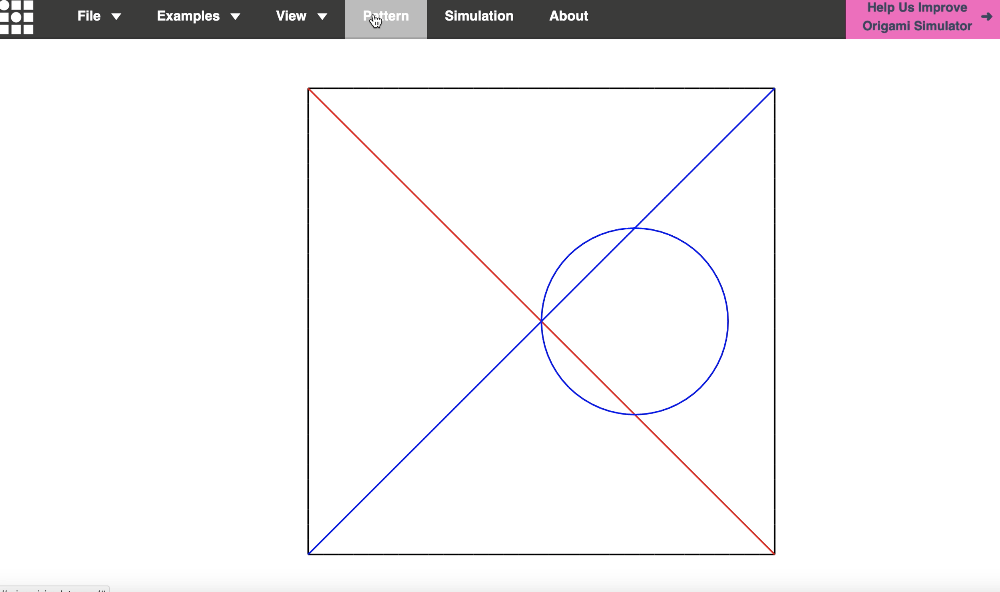

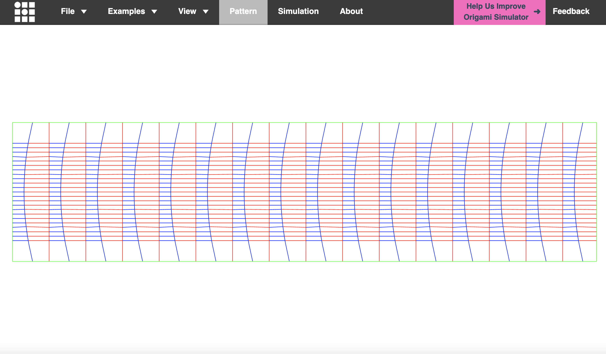 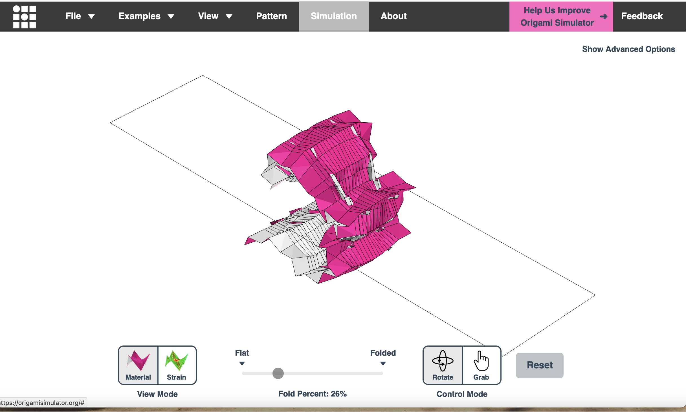
I also use this newly learned skill in the challenge-week for the MOC with my team. on a more practical note, the online simulator reads SVGs in a certain way (File - Design Tips on the simulator (Mountain folds have red stroke - rgb(255, 0, 0), hex #ff0000; Valley folds have blue stroke - rgb(0, 0, 255), hex #0000ff; Boundary edges have black stroke - rgb(0, 0, 0), hex #000000). these rules are different to those I use during the the lasercuttring and the vinylprinting process. here I define the actions and allocate them to the colors of choice - so in the end, the colours I use for the simulation-SVGs are fine to. but its important to keep in mind that the simulation SVGs do not necessarily have the same color-codes as the rhino-files used for printing.
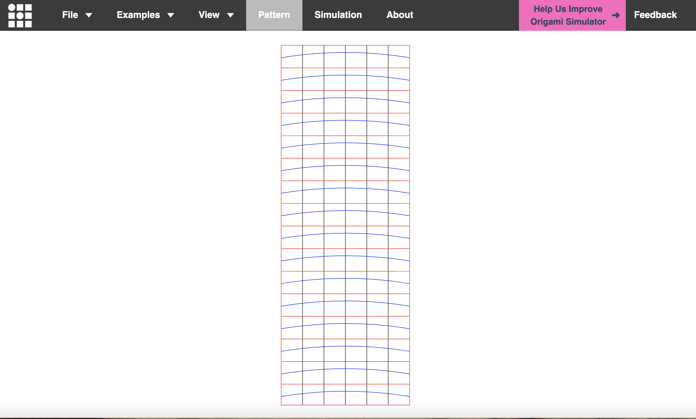 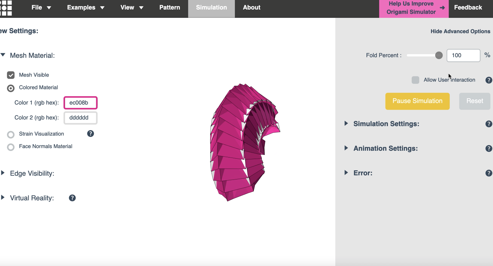
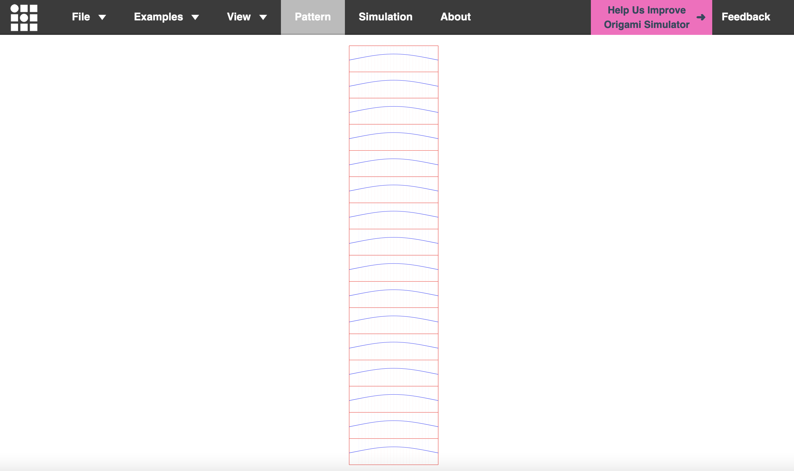 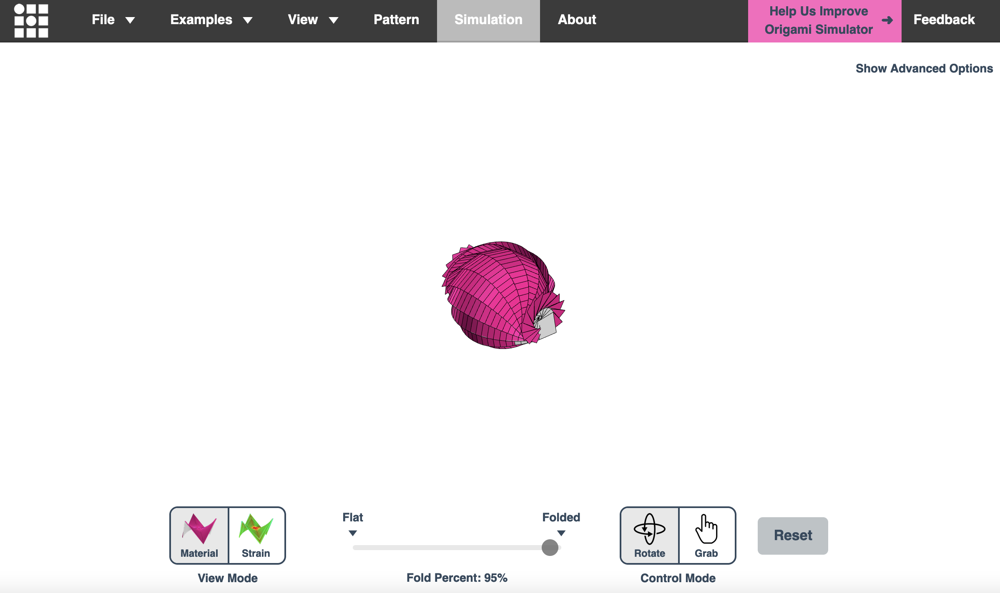

about embedded codings (or how to use input and output sensors)¶
with Victor
how can all this codings and electronics in the end serve us? there is one project that started in the FabLab / MDEF environment some years ago which presents this very clearly - the smart citizen platform makes citizens use sensors to invesitgate their immediate environments (well still thats not a purspose but it might still as well as inspire some interests). so what we are talking about today is how to connect the elcetronic means in ways that we understand the information shown. meaning in other words to sense and input and make us observe and output as an example and excercies, we are playing with light sensors and try to code in a way so we know the amount (or strenght?) of the light, reaching the sensor. so in a way we can dimm the light once we would add a controll function. but for now it is just about setting up the featherboard in a way that a photo receptive sensor which receives light information (thus a light sensors) and translates that into elecrticity that therefore gives another sign/ output (such as the lightening of an LED light or the making of a sound).
so in the end we connect a LED and a button and a photo receptive sensor. then we make the light signal appeearing as a “morse code” and connect the LED sensor with the photo recepting sensor. easy. no?
exercise four - till the enlightment¶
all of this works similar to the ghost machiene that we created last term. But yeah, that has been some time ago and the main coder here was definetely Amanda, without her the ghost would have remained unsensed forever.
ok back to the basics. this lovely youtuber sets me back on track on how to arduino and how to LED - without sensor for now. Let make it blink for now…

now I am working with the timing, in order to get acquaintance with the morse-code thingy… as my youtube Kylie shows me its actually not that difficult to implement.
and here you have your puzzle, what am I communicating to you?

I even made my syntax complex according to the international morse code one and not my simple youtube reference… and believe me or not, after few failures it works (proud)

well, I guess now there is no postponing anymore. lets introduce the sensor, at least one is already plugged on my board, it cannot be so far from here.
I already tried earlier with this example from arduino. But as often as I assembled my board anew and checked the code and the pins, it would not work for me. now I come back to it and figure out, that somehow on my board, I need to still wire the ground to he blue, the negative vein. well, thinking for oneself sometimes helps, just blindly copying never works it seems. so, here we are, since the beginning I just copied their image, now I linked the LED, the sensors and the transmitters with my own little mind. and siehe da… my LED shines bright. and when I put my finger on the sensor, it shines a little bit less bright. not yet so much, but it dimms the light I can see it!

here even better, can you see it? well, I can

so, the set up that works for me is this one, which is inspired f the official arduino one to its right
okay, now I just somehow have to combine my morse-experience with the light-sensor output right? well, for another day, its night by now.
int LED = 25;
int unit = 200; // this is just according the the international morse code syntax to make it easier to write
int dot = 200; //
int dash = 600; // three units according to the inernational morsse code syntax
int letterGap = 600; // seven units according to the inernational morsse code syntax
int wordGap = 1400; // seven units according to the inernational morsse code syntax
void setup() {
// put your setup code here, to run once:
pinMode(LED, OUTPUT); //make pin A3 output
}
void loop() {
// put your main code here, to run repeatedly:
switchLED(dash);
delay(letterGap);
switchLED(dash);
switchLED(dash);
switchLED(dash);
delay(wordGap);
switchLED(dot);
switchLED(dash);
delay(letterGap);
switchLED(dot);
switchLED(dash);
switchLED(dot);
switchLED(dot);
delay(letterGap);
switchLED(dot);
switchLED(dash);
switchLED(dot);
switchLED(dot);
delay(wordGap);
switchLED(dash);
switchLED(dash);
delay(letterGap);
switchLED(dot);
switchLED(dot);
switchLED(dot);
switchLED(dot);
delay(letterGap);
switchLED(dot);
delay(letterGap);
switchLED(dot);
switchLED(dash);
switchLED(dot);
delay(letterGap);
switchLED(dash);
switchLED(dash);
switchLED(dash);
delay(letterGap);
switchLED(dot);
delay(letterGap);
switchLED(dot);
switchLED(dot);
switchLED(dot);
}
void switchLED(int timing) {
digitalWrite(LED, LOW);
delay (timing);
digitalWrite(LED, HIGH);
delay (timing);
}
ah and just f you wondered if you were right, reading my message… you were “to all my heroes”
the first microchallenge¶
in the first micro-challenge week we are asked to implement the skills we theorized so far about … like lasercutting and vinylprinting, parametrics and press fit designs, how to code arduino sensors and more.
my personal work evolves around storytelling, making up spaces for voices to resonate in and miking up the circles people find themselves thinking with. as I am in the MDEF programm at the moment working with myrto 24/7, we decided to took the chance to step back from our togetherness and let ourselves go with tthe flow of some other ideas. Marielle and Carolina had already found each other and merged their POC-experience-frustrations into a concrete idea of working with the ignorance of white people towards the statues of colonizers and their histories in the city (BCN). in my theoretical thoughworld I am dealing a lot with (de)colonial practices and anyways, this means re-telling stories and giving voice, so I stepped in to become the white addative to our multiracial team. here you go, enjoy the presentation of the first micro challenge.
about 3D fabrication and scanning¶
with Edu
3D printing¶
What options exist in 3D production?
Additive manufacturing technologies:
Working with Metal: DMLS (direct metal laser sintering) / SLM (selective laser melting) / DMP (direct metal printing)
Working with resin: SLA (stereolithography)
Specific machine that works with paper LOM (laminated object manufacturing - almost unknown) paper printer with a cut out and then millions of layers on top oof each other. Used for aesthetics reasons because you can get very high resolution outcomes
Subtractive manufacturing technologies:
CNC machining (computerized numerical control): It is a computerized manufacturing process in which pre-programmed software and code controls the movement of production equipment (ex. mills, lathes, routers, grinders and lasers)
More about the history of 3D printing I already describe here.
But the essentials again:
the 3D printer bible.
Subtractive vs additive comparison
The workflow with 3D printings… First we need a 3D model (exactly)
Then we have the slicer settings - we need to slice our model into horizontal pieces (Slicing STTL file)
Then we have the printer limitations and the material that we can use (data)
Built your 3D model as a bone – a shell and a infill, to safe material and to allow for faster production (printing)
Structural strength often comes with less material that are designed in complex dimensionals The most classic ones are: rectangular, triangular or diagrid, wiggle and honeycomb. We can change the structural strength of an object by adapting, changing its infill - here the goal is to make the material more isotropic.
Isotropic: having a physical property which has the same value when measured in different directions vs. Anisotropic: exhibiting properties with different values when measured in different directions.
What we will use withing FabLab?
FDM (fused deposition modeling) a 3D printing machine Two versions: 1. direct driven – direct driven machine are better but slower, here, the motor is directly at the nosel. You can only print hard materials, not flexible ones 2. Bowden driven – these machines have a cord to allow the nosel to move farther away
3D scanning¶
What is 3D scanning as a concept?
Being able to represent the real world in a digital environment – 3D scanning built on all the experiences humanity has made up to capture reality (painting, camera obscura…) how to draw geometrics? Emergence of mathematical solutions with trigonometric (math) – setting up rules for distances and spaces.
Nowadays, 3Dd scanning works by pure geometry and trigonometry.
google Earth uses 3D scanner with satellites and airplanes.
What is nerve modeling? Vector interpolations – how the lines are interconnected. What is mesh modelling? Points located in the space.
With a 3D scanner we are calculating the points in the space – reading the mesh. Not the nerves.
Different 3D print techniques…
SLS scanner (Structured light scanners) – extremely accurate and offer high resolution. They can be very fast. They use cameras and expose a lot of light, therefore they are not good to use to scan humans (bad for eyes…) Downside, you have to rotate you object yourself in the machine
Laser scanner – similar concept as the SLS but most f the time handheld – so you can move it around the object. This cannot scan colors but only shapes.
LiDAR scanner – also a laser but works with a different concept: Time of Flight. We use the time the light takes to travel to the object and to be bounced back from the object -we measure the distances. We have a laser-pointer and we move and project the laser onto the object. Downside, you cannot scan far with accuracy.
With LiDAR we can scan terrains, topographic maps. Because of the interplay between sunlight on plants and the laser (too fast and complex for me to understand completely but still very interesting) the leaves are invisible to the laser camera and thus one can capture whole environments/ forests… and make topographic analysis.
Digiprobe scanner – it is a switch, we have a pen with a switch and wen we touch the switch, it stores the value of the location. Touch digi – with this pen you can decide exactly which parts of an object you want to scan, capture. With this you can check specific parts. This is a CNM machine (manually able to decide where to put the pen)
Sometimes you spray your objects before scanning them via photogrammetry. Photogrammetry relies on computer
exercise five - the croissant becomes tangible (maybe)¶
to come back to my vegan croissants (on which the grasshoppers are munching) I export my rhino file as obj and upload it into the ultimaker cura.
looks magnificent, a black croissant… then I put some setting
because my croissant it quite floating in the air, it needs a support structure (I let cura generate how and what’s important here). Then I slice it up, cura tells me it will take 19 hours to print… in order to reduce that time, I scale down my objects. it is gonna be a tiny croissant, 50 mm (perfect size for grasshoppers I think). furthermore I reduce the density of the object and the support structure. okay, I slice it anew, 2,5 hours. that fine. I guess.
to the 3D printer… I set up the 3D printer, by heating up the nosel to insert my material (PML) - I want the most simple easy ging one because this is just a trial print in order to print (whatever sense in here? I am still figuring out). so once the PML-threat is loaded, I upload my cura-file onto the SD-card of the printer, insert it back into the printer and press print croissant.
I come back after a nice session of bouldering and unfortunately find out that my croisssant did not even make it to the baking point…
Amanda (my hero) hints me towards adding a raft - a plate adhesion which is essentially a plate ontop of which the support and the croissant can be built onto because according to Amanda, the structure had to little hold on the slippery plate of the 3D printer. okay, so I edit my settings and built a plate addhesion as a raft. reduce its density in order to safe time and slice it up in cura. about three hours it calculates. bueno, I set the SD-card and printer, press print and leave it printing over night… excited to come in the morning
and yes, in the morning, freshly baked, I am finding my croissant very sticked to the plate of the printer. Edu explains me, that a he hasnt been ussing rafts since years. rafts are for very complicated models, my little croissant definetely isnt. however, heaing up the bed a little helps me to sratch it off and then I break off the support and here e voila, the croissant is there.
about networking¶
with Victor
the internet – a copy machine? actually what it does is just copying information (bits) from one place to another.
Location: it is not possible to perform all processing/calculation orr hardware management tasks in the same site – four knot points on the world where all data are flowing through.
Parallelism: you can do, process multiple things at the same time
Modularity: about systems and distribution of humans, make developments in modules, each with a very specific function, easily scalable and more easily repairable
Access: human acccess to data from all computers wherever they are
The cloud does not exist, only hard drives on other people computers.
Dissociation between what’s happening here in reality and in the digital reality
There is a (real) network. the physical layer / manifestation of the transmission of information / data and there are *protocol*s – agreement on how networks are communicating. A set of rules of who can speak at what time.
We have physical layers and nonphysical rules.
My conversation with ChatGPT
An internet node, also known as a network node or internet exchange point, is a physical location where internet service providers (ISPs), content providers, and other networks interconnect to exchange internet traffic. It is difficult to provide an exact number of internet nodes worldwide since the number is constantly changing and evolving. However, there are many internet node directories available online that list various internet nodes around the world. One of the largest internet node directories is PeeringDB, which currently lists over 9,000 network operators and over 8,000 peering locations around the world. Internet nodes can be found in major cities and metropolitan areas worldwide. Some of the largest internet exchange points in terms of traffic volume include the AMS-IX in Amsterdam, the DE-CIX in Frankfurt, the LINX in London, the Equinix IX in Ashburn, Virginia, and the China Telecom CNIX in Beijing. It’s worth noting that the number and location of internet nodes can change over time as new networks emerge, and existing networks expand or contract.
network topologies
from centralization to distributed hubs - networks of networks adressess redirecting to adressess redirecting to adressses
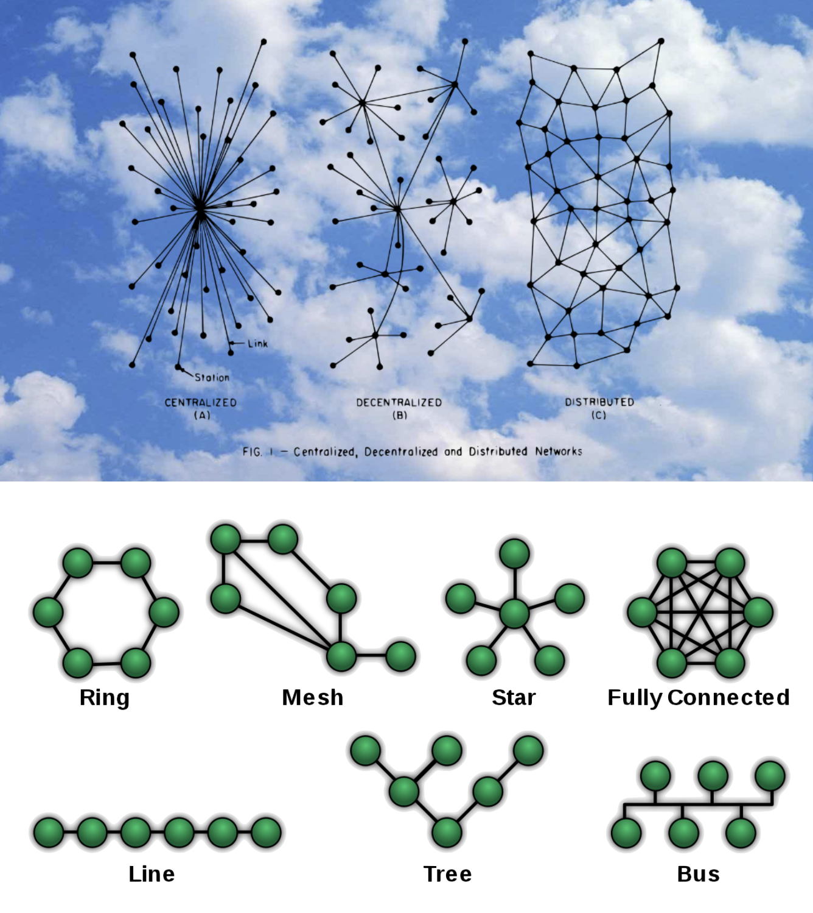
wired vs. wireless communication
wired: you need physical stuff (copper, aluminium) to sent electric signals. because cmoputers are faster than what cables can transmitt, there are parallel ports that take in a lot of cables parallely and serial ports that take series of data (USB = universal serial bus)
Parallel interfaces transfer multiple bits at the same time. They usually require buses of data - transmitting across eight, sixteen, or more wires. This means that waves of data can be sent, with high speeds, but with a lot of wires. On the contrary, serial interfaces stream their data with a reference signal, one single bit at a time. These interfaces can operate on as little as one wire, usually never more than four
wireless: over the air communication (OTA) of data - here, use the different various frequencies of signals (@radio frequency spectrum ranges)
am (amplitude modulation)
fm (frequency modulation)
what it the difference with AM radio, the amplitude, or overall strength, of the signal is varied to incorporate the sound information. with FM, the frequency (the number of times each second that the current changes direction) of the carrier signal is varied.
exercise six - a MDEF internal whatsap¶
we are all using the same broker (laptop of victor)

about how to make simple things complex (an LED)¶
or on Interfaces: machine vs machine
with Edu and Oscar
what can we do with a simple LED ?
why would we? oscar makes us enthiusastic telling us how he collaborates with dance companies. Here is Hackmd
excercise seven - blinkin with complexities¶
1.0 blink¶
simply, make it blink.
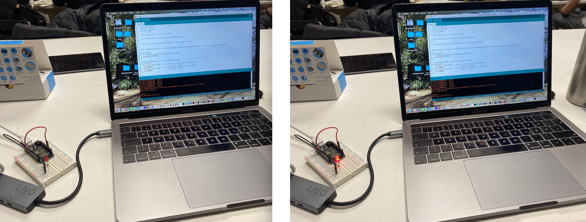
/*
Blink
Turns an LED on for one second, then off for one second, repeatedly.
*/
// the setup function runs once when you press reset or power the board
#define LED 14 //int LED = 14; practically these two have the same output put they come to the result in different ways.
void setup() {
// initialize digital pin LED_BUILTIN as an output.
pinMode(LED, OUTPUT);
}
// the loop function runs over and over again forever
void loop() {
digitalWrite(LED, HIGH); // turn the LED on (HIGH is the voltage level)
delay(1000); // wait for a second
digitalWrite(LED, LOW); // turn the LED off by making the voltage LOW
delay(1000); // wait for a second
}
2.0 blink by command¶
great next. Now we gonna write a code to ask for constent, we want to be asked before the LED is starting to blink. in order to do so, we are using the serial monitor and tell the arduino to do something only in the moment we tell him. it is like a chat between me and the arduino, with the serial monitor as out communication platform. how do we do that?
we write a code and the open the serial monitor, and write in there the commant blink and (according to what we coded), my arduino will excecute the command - and will blink.
2.0 blink by command. first it does not work. Our internal communication (the serial monitor) does not respond to my commands. Oscar explains that I need to set up the serial monitor in technical term so that the USB connection does understand. Instead of the new line I change the settings to both NL & CR and the set to 9600 baud. Now, I works, if I say blink, my arduino blinks.
serial.begins = is the communicaion with the USB (universal serial bus). So the speed (in brackets) has to be aliigned between the arduino and our featherboard.
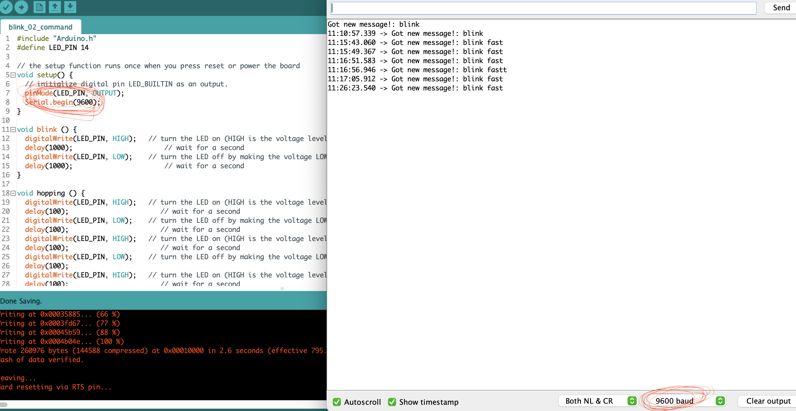
now it works, if I say blink fast, tthe arduino blinks fast (because I created a hopping function).
#include "Arduino.h"
#define LED_PIN 14
// the setup function runs once when you press reset or power the board
void setup() {
// initialize digital pin LED_BUILTIN as an output.
pinMode(LED_PIN, OUTPUT);
Serial.begin(9600);
}
void blink () {
digitalWrite(LED_PIN, HIGH); // turn the LED on (HIGH is the voltage level)
delay(1000); // wait for a second
digitalWrite(LED_PIN, LOW); // turn the LED off by making the voltage LOW
delay(1000); // wait for a second
}
void hopping () {
digitalWrite(LED_PIN, HIGH); // turn the LED on (HIGH is the voltage level)
delay(100); // wait for a second
digitalWrite(LED_PIN, LOW); // turn the LED off by making the voltage LOW
delay(100); // wait for a second
digitalWrite(LED_PIN, HIGH); // turn the LED on (HIGH is the voltage level)
delay(100); // wait for a second
digitalWrite(LED_PIN, LOW); // turn the LED off by making the voltage LOW
delay(100);
digitalWrite(LED_PIN, HIGH); // turn the LED on (HIGH is the voltage level)
delay(100); // wait for a second
digitalWrite(LED_PIN, LOW); // turn the LED off by making the voltage LOW
delay(100); // wait for a second
digitalWrite(LED_PIN, HIGH); // turn the LED on (HIGH is the voltage level)
delay(100); // wait for a second
digitalWrite(LED_PIN, LOW); // turn the LED off by making the voltage LOW
delay(100);
}
// the loop function runs over and over again forever
void loop() {
if (Serial.available()) {
String newMsg = Serial.readString();
newMsg.trim();
Serial.print("Got new message!: ");
Serial.println(newMsg);
// blink if we tell it to!
if (newMsg.equals("blink")){
blink();
}
if (newMsg.equals("blink fast")){
hopping();
}
}
}
now, this is very inefficient, our code has a lot of lines and will probably only grow till the point that it is so heavy the featherboard cannot hold it anymore and the arduino function does not work. so we are now working toward fully parametrizing our functions as much as possisble…
3.0 blink and breathe¶
working with a jled library to make our LED breathe (slowly dimming on and dimming off)
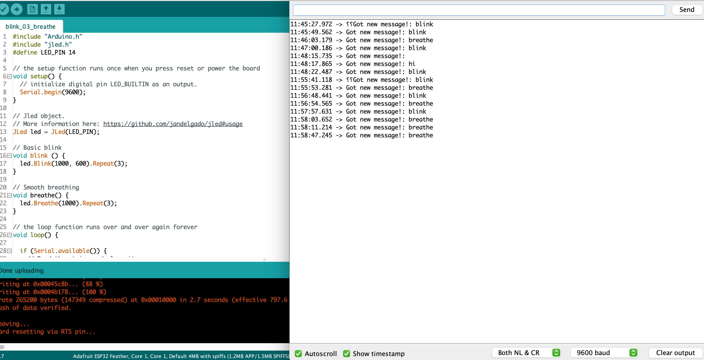
#include "Arduino.h"
#include "jled.h"
#define LED_PIN 14
// the setup function runs once when you press reset or power the board
void setup() {
// initialize digital pin LED_BUILTIN as an output.
Serial.begin(9600);
}
// Jled object.
// More information here: https://github.com/jandelgado/jled#usage
JLed led = JLed(LED_PIN);
// Basic blink
void blink () {
led.Blink(1000, 600).Repeat(3);
}
// Smooth breathing
void breathe() {
led.Breathe(1000).Repeat(3);
}
// the loop function runs over and over again forever
void loop() {
if (Serial.available()) {
// Read the string and clean it up
String newMsg = Serial.readString();
newMsg.trim();
// For debugging purposes, print it
Serial.print("Got new message!: ");
Serial.println(newMsg);
// Blink if we tell it to!
if (newMsg.equals("blink")){
blink();
// Or breathe!
} else if (newMsg.equals("breathe")) {
breathe();
}
}
// Do not remove this line!
led.Update();
}
4.0 blinking over the network¶
like we tried last week with victor, we are using the MQTT (a protocol that is used in a lot of internet of thing - IOT devices) which is used for us to trigger to sensors and allows us to listen the output.
instead of relying on a cable, we talk via the wifi network existing and we listen all together to the same things. in this case it means we are commanding either breathe or blink and all featherboards in class (that managed to connect the wifi-code in their arduino) will see their LEDs lighting up.

what needs to be done: defining the wifi network (we/oour featherboards are all connected to) and our name/our featherboaords name…
#include "jled.h"
#define LED_PIN 14
// New code for MQTT!
//-------------------
#include <WiFi.h>
#include <PubSubClient.h>
const char* ssid = "Iaac-Wifi";
const char* password = "EnterIaac22@";
WiFiClient wifiClient;
const char* mqttBroker = "mqtt-staging.smartcitizen.me";
const char* mqttClientName = "s&c";
const char* mqttClientUser = "fablabbcn102";
const char* mqttClientPass = "";
const char* topicToSub = "lab";
// const char* topicToPub = "lab";
PubSubClient mqttClient(wifiClient);
//-------------------
// Jled object.
// More information here: https://github.com/jandelgado/jled#usage
JLed led = JLed(LED_PIN);
//-------------------
// Add more animations here!
// Basic blink
void blink () {
led.Blink(1000, 600).Repeat(3);
}
// Smooth breathing
void breathe() {
led.Breathe(1000).Repeat(3);
}
//-------------------
void mqttConnect() {
while (!mqttClient.connected()) {
Serial.print("Attempting MQTT connection...");
if (mqttClient.connect(mqttClientName, mqttClientUser, mqttClientPass)) {
Serial.println("connected");
mqttClient.publish("hello", mqttClientName);
// Topic(s) subscription
mqttClient.subscribe(topicToSub);
} else {
Serial.print("failed, rc=");
Serial.print(mqttClient.state());
Serial.println(" try again in 5 seconds");
delay(5000);
}
}
}
void callback(char* topic, byte* message, unsigned int length) {
String newMsg;
for (int i = 0; i < length; i++) {
newMsg += (char)message[i];
}
Serial.print("Message arrived on topic: ");
Serial.print(topic);
Serial.print(". Message: ");
Serial.println(newMsg);
if (String(topic) == topicToSub) {
// For debugging purposes, print it
Serial.print("Got new message!: ");
Serial.println(newMsg);
// Blink if we tell it to!
if (newMsg.equals("blink")){
blink();
// Or breathe!
} else if (newMsg.equals("breathe")) {
breathe();
}
}
}
// the setup function runs once when you press reset or power the board
void setup() {
// initialize digital pin LED_BUILTIN as an output.
Serial.begin(9600);
// Connect to wifi
WiFi.begin(ssid, password);
while (WiFi.status() != WL_CONNECTED) {
delay(500);
Serial.print(".");
}
Serial.print("Connected to ");
Serial.println(ssid);
Serial.print("IP address: ");
Serial.println(WiFi.localIP());
// MQTT setup
mqttClient.setServer(mqttBroker, 1883);
mqttClient.setCallback(callback);
}
// the loop function runs over and over again forever
void loop() {
// Check if we are still connected to the MQTT broker
if (!mqttClient.connected()) {
mqttConnect();
}
// Let PubSubClient library do his magic
mqttClient.loop();
// Do not remove this line!
led.Update();
}

5.0 blinking together with arguments¶
great, can we make this part even a bit more complex? maybe with a slider so we can adapt the speed (intensity) of the function (either blink or breathe)?
what we need to code an argument so a broker can translate within the network.
again we need to change the wifi network (we/oour featherboards are all connected to) credentials and add our name/our featherboaords names.
#include "Arduino.h"
#include "jled.h"
#define LED_PIN 14
// New code for MQTT!
//-------------------
#include <WiFi.h>
#include <PubSubClient.h>
const char* ssid = "Iaac-Wifi";
const char* password = "EnterIaac22@";
WiFiClient wifiClient;
const char* mqttBroker = "mqtt-staging.smartcitizen.me";
const char* mqttClientName = "c&s";
const char* mqttClientUser = "fablabbcn102";
const char* mqttClientPass = "";
const char* topicToSub = "lab";
// const char* topicToPub = "lab";
PubSubClient mqttClient(wifiClient);
//-------------------
// Jled object.
// More information here: https://github.com/jandelgado/jled#usage
JLed led = JLed(LED_PIN);
//-------------------
// Add more animations here!
// Basic blink
void blink (int time_on = 100) {
led.Blink(time_on, time_on).Repeat(3);
}
// Smooth breathing
void breathe(int time_on = 100) {
led.Breathe(time_on).Repeat(3);
}
//-------------------
// burn
void burn(int time_on = 100) {
led.Candle(time_on).Repeat(3);
}
//-------------------
void mqttConnect() {
while (!mqttClient.connected()) {
Serial.print("Attempting MQTT connection...");
if (mqttClient.connect(mqttClientName, mqttClientUser, mqttClientPass)) {
Serial.println("connected");
mqttClient.publish("hello", mqttClientName);
// Topic(s) subscription
mqttClient.subscribe(topicToSub);
} else {
Serial.print("failed, rc=");
Serial.print(mqttClient.state());
Serial.println(" try again in 5 seconds");
delay(5000);
}
}
}
void callback(char* topic, byte* message, unsigned int length) {
String newMsg;
for (int i = 0; i < length; i++) {
newMsg += (char)message[i];
}
// Serial.print("Message arrived on topic: ");
// Serial.print(topic);
// Serial.print(". Message: ");
// Serial.println(newMsg);
if (String(topic) == topicToSub) {
// For debugging purposes, print it
// Serial.print("Got new message!: ");
// Serial.println(newMsg);
int pos = newMsg.indexOf("/");
String action;
int param;
if (pos > -1) {
action = newMsg.substring(0, pos);
param = newMsg.substring(pos+1).toInt();
} else {
action = newMsg;
param = 100;
}
// Serial.print("Action requested: ");
// Serial.println(action);
// Serial.print("Parameter: ");
// Serial.println(param);
// Blink if we tell it to!
if (action.equals("blink")){
blink(param);
// Or breathe!
} else if (action.equals("breathe")) {
breathe(param);
} else if (action.equals("burn")) {
burn(param);
}
}
}
// the setup function runs once when you press reset or power the board
void setup() {
// initialize digital pin LED_BUILTIN as an output.
Serial.begin(9600);
// Connect to wifi
WiFi.begin(ssid, password);
while (WiFi.status() != WL_CONNECTED) {
delay(500);
Serial.print(".");
}
Serial.print("Connected to ");
Serial.println(ssid);
Serial.print("IP address: ");
Serial.println(WiFi.localIP());
// MQTT setup
mqttClient.setServer(mqttBroker, 1883);
mqttClient.setCallback(callback);
}
// the loop function runs over and over again forever
void loop() {
// Check if we are still connected to the MQTT broker
if (!mqttClient.connected()) {
mqttConnect();
}
// Let PubSubClient library do his magic
mqttClient.loop();
// Do not remove this line!
led.Update();
}
just some more thought on NODE RED Dashboard
about CNC fabrication¶
with Edu
here is course overview
CNC (computer numerical control) is a subtractive technique - opposite to 3D printing. we start with a block of material and take out parts
it works with a big motor that is linked to a metal rotational part that carves the material out (this technique exists since the 1940s). most industries nowadays are based on CNC machining (@ikea…) because CNC is a completely automated process - also the postprocesses are possible to.
pay attention to the signs of CNC production: the corners are nexer straight, always have a little fillet
benefits: the process can be almost completely automated, it is really really accurate, and the pieces we get are very strong because we take a block - which means we will have isometric qualities. also the machines can be programmed with different programmes, meaning that various parts can be produced by it.
CNC can mill in various ways:
with a 3-axis CNC: type of milling where the cutting tool moves along three axes (X, Y, and Z) to remove material from the workpiece. can be done with either a milling machine or a turning machine.
or with multi-axis CNC: type of milling that uses machines with more than four or five axiss to achieve greater precision and complexity in the machined part.
three subtypes:
indexed milling: cutting tool moves along multiple fixed positions to achieve complex shapes
continuous milling: the cutting tool moves along a continuous path to achieve smooth surfaces and complex contours
mill-turning: a single machine combines the functions of both milling and turning to achieve complex shapes in a single setup
another category, a handheld/guided machine. this one can not be automated completely but it allows for manual works and helps. this machine is only as accurrate, as you, the user are. (only for planar cuts - not very handy for 3 dimensional or very detailed works)
what are the parts of the CNC?
T-Slot Table: Provides a stable surface for holding the workpiece.
Spindle: Rotates the cutting tool and feeds it into the workpiece to remove material.
Bridge: Connects the X and Y-axis components and provides stability to the machine.
Steppers: Move the cutting tool along the X, Y, and Z-axis with high precision.
Cable Carrier: Protects and organizes the electrical cables that run between the machine components.
when using the CNC it is important to respect some safety rules. the CNC cuts out which means that material will be turned into dustt and chips and will fly around in the air. depending on the material used, this implies some issues such as health threats, inflamability…
how to design for the CNC entonces?
they call this process (because everything needs acronyms) CNC DFM (Design for Manufacturing)
these 50 digital joint poster is Edu’s bible
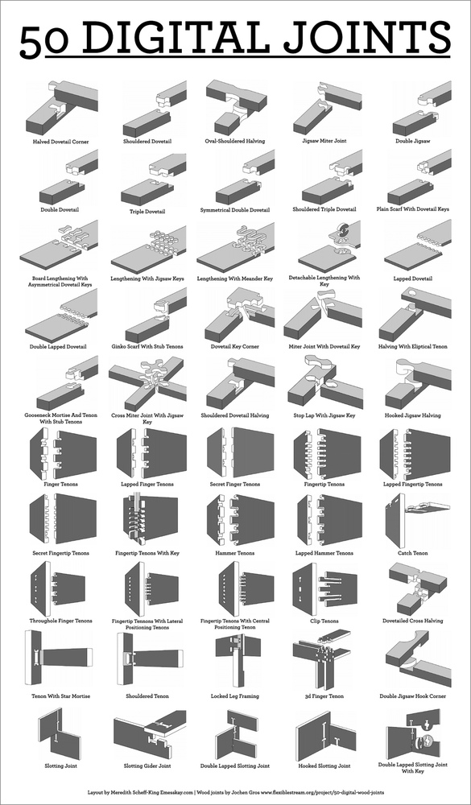
excercise eight -¶
hello